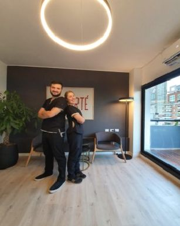

Hola somos Lola y Mauro, responsables de Dentix, sean bienvenidos a nuestro espacio donde, con mucha dedicación y entusiasmo, ejercemos nuestra profesión

Hola somos Lola y Mauro, responsables de Dentix, sean bienvenidos a nuestro espacio donde, con mucha dedicación y entusiasmo, ejercemos nuestra profesión

Dolor agudo, fractura de una pieza dental, perdida de un diente, movilidad por reabsorcion osea o trauma, abceso dental, mordedura en la lengua o labio, pequeño objeto entra las piezas, heridas provocadas por la ortodoncia

No solo nos encargamos de tratar los problemas relacionados a los dientes, si no que tambien tratamos problemas de encias, tejido periodontal, maxilar superior, maxilar inferior y la articulacion temporomandibular

Cuando se ha perdido una o mas piezas dentarias la única manera de reemplazarlas es mediante una prótesis que pueden ser fijas o removibles. La naturalidad y la funcionalidad son objetivos primordiales a la hora de realizar prótesis . El correcto estudio de cada caso permite un resultado optimo final sea cual sea la magnitud del caso.

El tratamiento de endodoncia sirve como recurso para lograr la permanencia de un diente o raíz en la boca, consiste en retirar el nervio del diente y rellenar ese conducto con una pasta antiséptica y permanente, es lo que se conoce con el nombre de tratamiento de conducto.

Ofrecemos maxima atencion a los niños previniendo diferentes enfermedades bucodentales desde la primera denticion hasta finalizar el crecimiento. Nos esforzamos en que nuestros pacientes niños siempre esten comodos con el objetivo de evitar la odontofobia

Los implantes dentales, que son reemplazos de aspecto natural para los dientes que se han perdido o necesitan ser extraídos, son esenciales no solo para mantener una hermosa sonrisa, sino también para la salud bucal en general.

Previene y trata la mala posición dentaria mediante aparatología que pueden ser fijas o removibles, se las realiza ha paciente de cualquier edad aunque lo ideal es entre los 9 y 12 años. Los casos mas frecuentes son dientes montados, diastemas, mandíbulas grandes ( protruídas) , mordidas abiertas cruzadas y profundas.